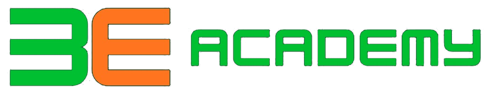

3E 3E Academy'">Vier Etappen trennen dich von einem Deutschniveau, das dich für Arbeit und Ausbildung in Deutschland qualifiziert. Klicke auf ein Level, um Playlist, Wortschatz, Spiele und Schreibtest zu öffnen — nur ein Level ist gleichzeitig geöffnet.
Zurück zu 3E Academy & KursanmeldungJeden Tag ein neues Wort — schau einfach wieder vorbei. Kein Konto nötig.
Alphabet, Aussprache und die ersten Sätze auf Deutsch.
CAN DO Was du danach kannst
WORTSCHATZ Wichtige Wörter — mit Audio 🔊
SCHREIBTEST Übersetze vom Arabischen ins Deutsche ✍️
VIDEO Playlist A1 — Easy German
SPIELE Wähle ein Thema — deckt den ganzen A1-Stoff ab
PDF Level-Dokument
Der Übergang zu echten, kurzen Gesprächen im Alltag.
CAN DO Was du danach kannst
WORTSCHATZ Wichtige Wörter — mit Audio 🔊
SCHREIBTEST Übersetze vom Arabischen ins Deutsche ✍️
VIDEO Playlist A2
SPIELE Wähle ein Thema — deckt den ganzen A2-Stoff ab
PDF Level-Dokument
Das meist geforderte Niveau für Ausbildung oder Arbeit in Deutschland.
CAN DO Was du danach kannst
WORTSCHATZ Wichtige Wörter — mit Audio 🔊
SCHREIBTEST Übersetze vom Arabischen ins Deutsche ✍️
VIDEO Playlist B1
SPIELE Wähle ein Thema — deckt den ganzen B1-Stoff ab
PDF Level-Dokument
Spezialisierte Berufe (Pflege, Technik, Management) und entspannter Austausch mit Muttersprachlern.
CAN DO Was du danach kannst
WORTSCHATZ Wichtige Wörter — mit Audio 🔊
SCHREIBTEST Übersetze vom Arabischen ins Deutsche ✍️
VIDEO Playlist B2
SPIELE Wähle ein Thema — deckt den ganzen B2-Stoff ab
PDF Level-Dokument